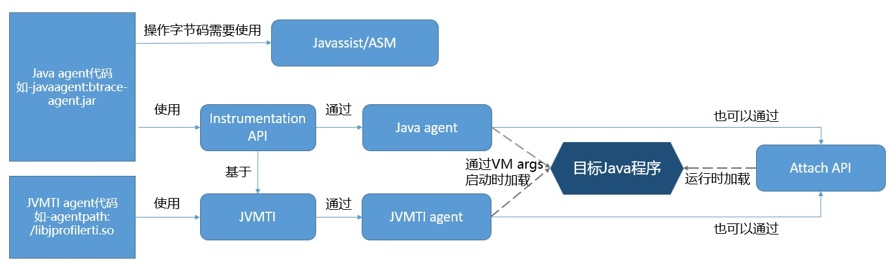
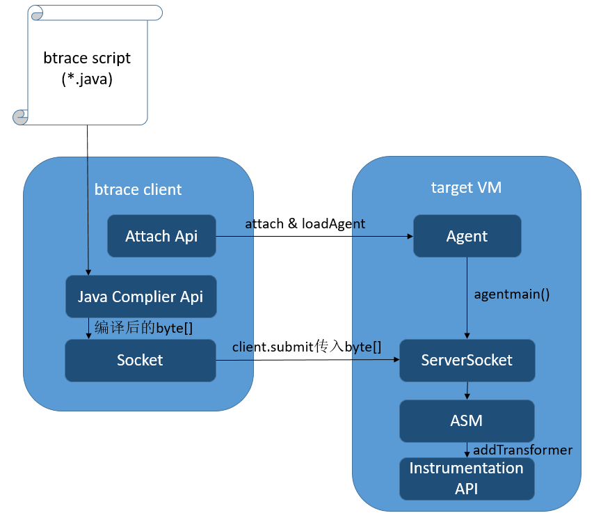
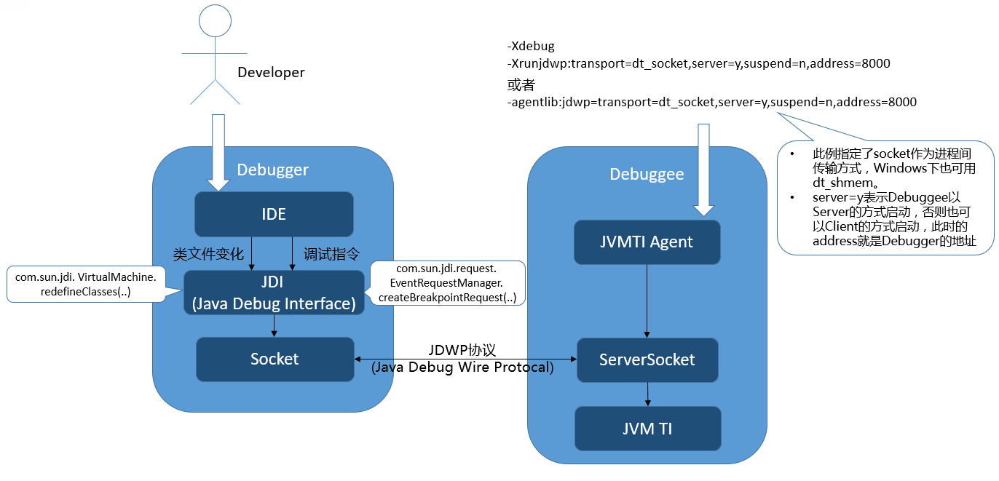

谈谈Java Intrumentation和相关应用
1 Overview
对于Java 程序员来说，Java Intrumentation、Java agent这些技术可能平时接触的很少，听上去陌生但又好像在哪里见到过。实际上，我们日常应用的各种工具中，有很多都是基于他们实现的，例如常见的热部署（JRebel, spring-loaded）、各种线上诊断工具（btrace, Greys）、代码覆盖率工具（JaCoCo）等等。 本文会介绍 Java Instrumentation及其相关概念，会涉及到的名词包括：
- Java Intrumentation API
- Java agent
- Attach API
- JVMTI
- ……
简单的来看，如果需要通过Intrumentation操作或监控一个Java程序，相关的工具和流程如下：

下文会依次介绍图中的相关概念，并谈谈原理和具体的应用场景。
2 Java Instrumentation
Instrumentation是Java提供的一个来自JVM的接口，该接口提供了一系列查看和操作Java类定义的方法，例如修改类的字节码、向classLoader的classpath下加入jar文件等。使得开发者可以通过Java语言来操作和监控JVM内部的一些状态，进而实现Java程序的监控分析，甚至实现一些特殊功能（如AOP、热部署）。 Instrumentation的一些主要方法如下：
291public interface Instrumentation {23 /**4 * 注册一个Transformer，从此之后的类加载都会被Transformer拦截。5 * Transformer可以直接对类的字节码byte[]进行修改6 */7 void addTransformer(ClassFileTransformer transformer);8 9 /**10 * 对JVM已经加载的类重新触发类加载。使用的就是上面注册的Transformer。11 * retransformation可以修改方法体，但是不能变更方法签名、增加和删除方法/类的成员属性12 */13 void retransformClasses(Class<?>... classes) throws UnmodifiableClassException;14 15 /**16 * 获取一个对象的大小17 */18 long getObjectSize(Object objectToSize);19 20 /**21 * 将一个jar加入到bootstrap classloader的 classpath里22 */23 void appendToBootstrapClassLoaderSearch(JarFile jarfile);24 25 /**26 * 获取当前被JVM加载的所有类对象27 */28 Class[] getAllLoadedClasses();29}其中最常用的方法就是addTransformer(ClassFileTransformer transformer)了，这个方法可以在类加载时做拦截，对输入的类的字节码进行修改，其参数是一个ClassFileTransformer接口，定义如下：
101/**2 * 传入参数表示一个即将被加载的类，包括了classloader，classname和字节码byte[]3 * 返回值为需要被修改后的字节码byte[]4 */5byte[]6transform( ClassLoader loader,7 String className,8 Class<?> classBeingRedefined,9 ProtectionDomain protectionDomain,10 byte[] classfileBuffer) throws IllegalClassFormatException;addTransformer方法配置之后，后续的类加载都会被Transformer拦截。对于已经加载过的类，可以执行retransformClasses来重新触发这个Transformer的拦截。类加载的字节码被修改后，除非再次被retransform，否则不会恢复。
主流的JVM都提供了Instrumentation的实现，但是鉴于Instrumentation的特殊功能，并不适合直接提供在JDK的runtime里，而更适合出现在Java程序的外层，以上帝视角在合适的时机出现。因此如果想使用Instrumentation功能，拿到Instrumentation实例，我们必须通过Java agent。
3 Java agent
Java agent是一种特殊的Java程序（Jar文件），它是Instrumentation的客户端。与普通Java程序通过main方法启动不同，agent并不是一个可以单独启动的程序，而必须依附在一个Java应用程序（JVM）上，与它运行在同一个进程中，通过Instrumentation API与虚拟机交互。
Java agent与Instrumentation密不可分，二者也需要在一起使用。因为Instrumentation的实例会作为参数注入到Java agent的启动方法中。
3.1 Java agent 的格式
Java agent以jar包的形式部署在JVM中，jar文件的manifest需要指定agent的类名。根据不同的启动时机，agent类需要实现不同的方法（二选一）。
111/**2 * 以vm参数的形式载入，在程序main方法执行之前执行3 * 其jar包的manifest需要配置属性Premain-Class4 */5public static void premain(String agentArgs, Instrumentation inst);67/**8 * 以Attach的方式载入，在Java程序启动后执行9 * 其jar包的manifest需要配置属性Agent-Class10 */11public static void agentmain(String agentArgs, Instrumentation inst);因此，如果想自己写一个java agent程序，只需定义一个包含premain或者agentmain的类，在方法中实现你的逻辑，然后在打包jar时配置一下manifest即可。可以参考如下的maven plugin配置：
131<plugin>2 <artifactId>maven-assembly-plugin</artifactId>3 <configuration>4 <archive>5 <manifestEntries>6 <Premain-Class>**.**.InstrumentTest</Premain-Class>7 <Agent-Class>**.**..InstrumentTest</Agent-Class>8 <Can-Redefine-Classes>true</Can-Redefine-Classes>9 <Can-Retransform-Classes>true</Can-Retransform-Classes>10 </manifestEntries>11 </archive>12 </configuration>13</plugin>3.2 Java agent 的加载
一个Java agent既可以在VM启动时加载，也可以在VM启动后加载：
启动时加载：通过vm的启动参数-javaagent:**.jar来启动
启动后加载：在vm启动后的任何时间点，通过attach api，动态地启动agent
- 如何通过attach api动态加载agent，请见下一小节
agent加载时，Java agent的jar包先会被加入到system class path中，然后agent的类会被system class loader加载。没错，这个system class loader就是所在的Java程序的class loader，这样agent就可以很容易的获取到想要的class。
对于VM启动时加载的Java agent，其premain方法会在程序main方法执行之前被调用，此时大部分Java类都没有被加载（“大部分”是因为，agent类本身和它依赖的类还是无法避免的会先加载的），是一个对类加载埋点做手脚（addTransformer）的好机会。如果此时premain方法执行失败或抛出异常，那么JVM的启动会被终止。
对于VM启动后加载的Java agent，其agentmain方法会在加载之时立即执行。如果agentmain执行失败或抛出异常，JVM会忽略掉错误，不会影响到正在running的Java程序。
3.3 举个例子
一个最简单的Java agent程序如下，该程序通过-javaagent参数附着在目标程序上启动，实现了在类加载时做拦截，修改字节码的功能。
191public class InstrumentationExample {23 // Java agent指定的premain方法，会在main方法之前被调用4 public static void premain(String args, Instrumentation inst) {5 // Instrumentation提供的addTransformer方法，在类加载时会回调ClassFileTransformer接口6 inst.addTransformer(new ClassFileTransformer() {7 8 public byte[] transform(ClassLoader loader, String className, Class<?> classBeingRedefined,9 ProtectionDomain protectionDomain, byte[] classfileBuffer)10 throws IllegalClassFormatException {11 // 开发者在此自定义做字节码操作，将传入的字节码修改后返回12 // 通常这里需要字节码操作框架13 // ......14 return transformResult;15 }16 });17 }18 19}以上面的代码文件，根据前一小节的要求打好jar包，就可以跟随宿主Java应用一起启动了。从执行的流程上来看，效果如下图所示：

可以看出，通过Java agent我们可以注册类加载的回调方法，来实现通用的类加载拦截。
不过上述代码并没有给出transform方法的具体实现，我们举一个具体场景细化一下这个方法的实现：例如，我想要监听某个类，并对这个类的每个方法都做一层AOP，打印出方法调用的耗时。那么使用Instrumentation的解决方式，就是修改这个类的字节码，对每个方法作如下改动：
111// 原方法2public void method1(){3 dosomething();4}5 ↓ ↓ ↓ ↓ ↓6// 修改后的方法7public void method1(){8 long stime = System.currentTimeMillis();9 dosomething();10 System.out.println("method1 cost:" + (System.currentTimeMillis() - stime) + " ms");11}要想实现这种效果，我们需要在transform方法的实现中，对指定的类，做指定的字节码增强。通常来说，做字节码增强都需要使用到框架，比如ASM,CGLIB,Byte Buddy,Javassist。不过如果你喜欢，你可以直接用位运算操作byte[]，不需要任何框架，例如JDK反射(method.invoke())的实现，就真的是用位操作拼装了一个类。 言归正传，操作字节码的高手可能更喜欢ASM，因为它提供的方法更底层，功能更强大更直白。对于字节码不熟悉的开发者，更适合javassist，它可以直接以Java代码方式直接修改方法体。我们以javassist为例，看看怎么实现上述的功能，完整代码如下：
491public class InstrumentationExample {23 // Java agent指定的premain方法，会在main方法之前被调用4 public static void premain(String args, Instrumentation inst) {5 // Instrumentation提供的addTransformer方法，在类加载时会回调ClassFileTransformer接口6 inst.addTransformer(new ClassFileTransformer() {7 8 public byte[] transform(ClassLoader loader, String className, Class<?> classBeingRedefined,9 ProtectionDomain protectionDomain, byte[] classfileBuffer)10 throws IllegalClassFormatException {11 if (!"com/test/TestClass".equals(className)) {12 // 只修改指定的Class13 return classfileBuffer;14 }15 16 byte[] transformed = null;17 CtClass cl = null;18 try {19 // CtClass、ClassPool、CtMethod、ExprEditor都是javassist提供的字节码操作的类20 ClassPool pool = ClassPool.getDefault();21 cl = pool.makeClass(new ByteArrayInputStream(classfileBuffer));22 CtMethod[] methods = cl.getDeclaredMethods();23 for (int i = 0; i < methods.length; i++) {24 methods[i].instrument(new ExprEditor() {25 26 27 public void edit(MethodCall m) throws CannotCompileException {28 // 把方法体直接替换掉，其中 $proceed($$);是javassist的语法，用来表示原方法体的调用29 m.replace("{ long stime = System.currentTimeMillis();" + " $_ = $proceed($$);"30 + "System.out.println(\"" + m.getClassName() + "." + m.getMethodName()31 + " cost:\" + (System.currentTimeMillis() - stime) + \" ms\"); }");32 }33 });34 }35 // javassist会把输入的Java代码再编译成字节码byte[]36 transformed = cl.toBytecode();37 } catch (Exception e) {38 e.printStackTrace();39 } finally {40 if (cl != null) {41 cl.detach();// ClassPool默认不会回收，需要手动清理42 } 43 }44 return transformed;45 }46 });47 }48 49}4 Attach API
上面提到，Java agent可以在JVM启动后再加载，就是通过Attach API实现的。当然，Attach API可不仅仅是为了实现动态加载agent，Attach API其实是跨JVM进程通讯的工具，能够将某种指令从一个JVM进程发送给另一个JVM进程。 加载agent只是Attach API发送的各种指令中的一种， 诸如jstack打印线程栈、jps列出Java进程、jmap做内存dump等功能，都属于Attach API可以发送的指令。
4.1 Attach API 用法
由于是进程间通讯，那代表着使用Attach API的程序需要是一个独立的Java程序，通过attach目标进程，与其进行通讯。下面的代码表示了向进程pid为1234的JVM发起通讯，加载一个名为agent.jar的Java agent。
71// VirtualMachine等相关Class位于JDK的tools.jar2VirtualMachine vm = VirtualMachine.attach("1234"); // 1234表示目标JVM进程pid3try {4 vm.loadAgent(".../agent.jar"); // 指定agent的jar包路径，发送给目标进程5} finally {6 vm.detach();7}vm.loadAgent之后，相应的agent就会被目标JVM进程加载，并执行agentmain方法。
4.2 Attach API 原理
按惯例，以Hotspot虚拟机，Linux系统为例。当external process执行VirtualMachine.attach时，需要通过操作系统提供的进程通信方法，例如信号、socket，进行握手和通信。其具体内部实现流程如下所示：
| external process（attach发起的进程） | target VM（目标JVM进程，假设pid为XXX） |
|---|---|
| 1. 创建文件：.attach_pidXXX | |
| 2. 检查.java_pidXXX 文件是否存在，如果存在则跳过4 | |
| 3. 向目标JVM发送SIGQUIT信号 → | |
| 4. 轮询等待.java_pidXXX 文件的创建（5秒超时） | 1. JVM的Signal Dispatcher线程收到SIGQUIT信号 |
| 4. 轮询等待 ………… | 2. 检查.attach_pidXXX 文件是否存在，若不存在则继续，否则忽略信号 |
| 4. 轮询等待 ………… | 2. 创建一个新线程Attach Listener，专门负责接收各种attach请求指令 |
| 4. 轮询等待 ………… | 3. 创建.java_pidXXX文件 |
| 4. 轮询等待 ………… | 4. 开始监听socket(. java_pidXXX) |
| 5. 尝试连接socket (.java_pidXXX ) |
上面提到了两个文件：
- .attach_pidXXX 后面的XXX代表pid，例如pid为1234则文件名为.attach_pid1234。该文件目的是给目标JVM一个标记，表示触发SIGQUIT信号的是attach请求。这样目标JVM才可以把SIGQUIT信号当做attach连接请求，再来做初始化。其默认全路径为/proc/XXX/cwd/.attach_pidXXX，若创建失败则使用/tmp/attach_pidXXX
- .java_pidXXX 后面的XXX代表pid，例如pid为1234则文件名为.java_pid1234。由于Unix domain socket通讯是基于文件的，该文件就是表示external process与target VM进行socket通信所使用的文件，如果存在说明目标JVM已经做好连接准备。其默认全路径为/proc/XXX/cwd/.java_pidXXX，若创建失败则使用/tmp/java_pidXXX
VirtualMachine.attach动作类似TCP创建连接的三次握手，目的就是搭建attach通信的连接。而后面执行的操作，例如vm.loadAgent，其实就是向这个socket写入数据流，接收方target VM会针对不同的传入数据来做不同的处理。
5 JVM Tool Interface(JVMTI)
JVM Tool Interface(JVMTI)是JVM提供的native编程接口，开发者可以通过JVMTI向JVM监控状态、执行指令，其目的是开放出一套JVM接口用于 profile、debug、监控、线程分析、代码覆盖分析等工具。 JVMTI和Instumentation API的作用很相似，都是一套JVM操作和监控的接口，且都需要通过agent来启动：
- Instumentation API需要打包成jar，并通过Java agent加载（-javaagent）
- JVMTI需要打包成动态链接库（随操作系统，如.dll/.so文件），并通过JVMTI agent加载（-agentlib/-agentpath）
既然都是agent，那么加载时机也同样有两种：启动时（Agent_OnLoad）和运行时Attach（Agent_OnAttach）。 不过相比于Instumentation API，JVMTI的功能强大的多，不知道高到哪里去了。它是实现Java调试器，以及其它Java运行态测试与分析工具的基础。JVMTI能做的事情包括：
- 获取所有线程、查看线程状态、线程调用栈、查看线程组、中断线程、查看线程持有和等待的锁、获取线程的CPU时间、甚至将一个运行中的方法强制返回值……
- 获取Class、Method、Field的各种信息，类的详细信息、方法体的字节码和行号、向Bootstrap/System Class Loader添加jar、修改System Property……
- 堆内存的遍历和对象获取、获取局部变量的值、监测成员变量的值……
- 各种事件的callback函数，事件包括：类文件加载、异常产生与捕获、线程启动和结束、进入和退出临界区、成员变量修改、gc开始和结束、方法调用进入和退出、临界区竞争与等待、VM启动与退出……
- 设置与取消断点、监听断点进入事件、单步执行事件……
前面说的Instumentation API也是基于JVMTI来实现的，具体以addTransformer来说，通过Instrumentation注册的ClassFileTransformer，实际上是注册了JVMTI针对类文件加载事件（ClassFileLoadHook）的callback函数。这个callback函数长这个样子：
111void JNICALL2ClassFileLoadHook(jvmtiEnv *jvmti_env,3 JNIEnv* jni_env,4 jclass class_being_redefined,5 jobject loader,6 const char* name,7 jobject protection_domain,8 jint class_data_len,9 const unsigned char* class_data,10 jint* new_class_data_len,11 unsigned char** new_class_data)注意到参数class_data和new_class_data分别对应了读入的原字节码数组，和提供的修改后的字节码数组的指针。这样，我们在方法的实现中就可以把修改后的类的字节码写回，实现 bytecode instrumentation。 InstumentationImpl的实现中，在这个callback函数里，对ClassFileTransformer的transform方法再进行一次回调。这样的一次封装，就做到了通过Java语言实现字节码拦截修改的能力。
6 相关技术的实际应用
6.1 btrace等诊断工具
6.1.1 btrace
btrace是一个安全的，动态追踪Java程序的工具。btrace可以跟踪到一个运行中的Java程序，监控到类和方法级别的状态信息。由于其api的限制，对目标程序源码无侵入性，不会影响到程序原有逻辑。 btrace的使用方式和内部原理如下图，使用者首先需要准备一份btrace脚本（btrace script），用来定义使用者想要追踪的位置和信息。接下来启动btrace client，启动参数包括目标JVM的pid用于attach、以及写好的btrace脚本文件。目标JVM会通过attach（或者启动时参数指定-javaagent）加载上Java agent，并通过socket与brace client建立连接。btrace脚本会被编译成字节码然后发送给目标JVM的agent，通过解析其语义，转换为对程序源码的改写，此处也是基于Instrumentation api完成的。

一份btrace脚本示例如下（来自官方文档），这份脚本会跟踪到javax.swing.*包下的所有class下的所有method，并在进入方法体时通过标准输出打印出类名和方法名。
201package samples;23import com.sun.btrace.annotations.*;4import static com.sun.btrace.BTraceUtils.*;56/**7 * This script traces method entry into every method of 8 * every class in javax.swing package! Think before using 9 * this script -- this will slow down your app significantly!!10 */11 public class AllMethods {12 (13 clazz="/javax\\.swing\\..*/",14 method="/.*/"15 )16 public static void m( String probeClass, String probeMethod) {17 print(Strings.strcat("entered ", probeClass));18 println(Strings.strcat(".", probeMethod));19 }20}这份例子仅仅是一个简单的例子，btrace追踪点的时机（对应例子里的@OnMethod）可以有很多，包括方法体进入/退出、方法调用与返回、行号、异常抛出、临界区进入和退出等等，追踪的内容（对应例子里的@ProbeClassName、@ProbeMethodName）除了提到的类名和方法名，还有对象的实例、入参和返回值、方法耗时等都可以作为参数注入到脚本方法的入参中。看得出，btrace脚本的语法强大且复杂，但是为了安全（不能修改程序自身逻辑）做了诸多的限制，例如不能新建对象、不能调用实例方法以及静态方法（BTraceUtils等特有方法除外）、不能使用循环、不能抛出和捕获异常等等。
6.1.2 Greys
从功能设计的角度上看，btrace在保证“安全”的前提下给予了用户尽可能多的功能，这也因此导致了其api和使用起来的复杂性。在实际生产环境的实践中，我更倾向于使用简单易用的工具，毕竟一些常用的功能基本可以覆盖绝大多数使用场景。例如Greys也是一个Java程序诊断工具（阿里内部叫Arthas，对其做了二次开发）其原理与btrace类似，区别在于用户不需要编写btrace脚本，直接通过命令行指令交互。因此它更像一个产品而不仅仅是工具，它提供了包括方法的出入参监控、类加载信息查看、调用堆栈查看、方法调用轨迹和耗时查看的功能。在实际线上问题诊断中，尤其是在无法debug的环境中定位问题，还是非常实用的。
举个例子，Greys可以以下面这种使用方式来监控某个方法的调用轨迹和内部耗时,参数包括了监控的类名表达式、方法名、追踪的路径表达式等。
xxxxxxxxxx191ga?>ptrace -t *alibaba*Test printAddress --path=*alibaba*2Press Ctrl+D to abort.3Affect(class-cnt:10 , method-cnt:36) cost in 148 ms.4`---+pTracing for : thread_name="agent-test-address-printer" thread_id=0xb;is_daemon=false;priority=5;process=1004;5`---+[2,2ms]com.alibaba.AgentTest:printAddress(); index=1021;6+---+[1,1ms]com.alibaba.manager.DefaultAddressManager:newAddress(); index=1014;7| +---[1,1ms]com.alibaba.CountObject:<init>(); index=1012;8| `---[1,0ms]com.alibaba.Address:<init>(); index=1013;9+---+[2,1ms]com.alibaba.manager.DefaultAddressManager:toString(); index=1020;10| +---+[2,1ms]com.alibaba.manager.DefaultAddressManager:toStringPass1(); index=1019;11| | +---+[2,1ms]com.alibaba.manager.DefaultAddressManager:toStringPass2(); index=1017;12| | | +---[1,0ms]com.alibaba.Address:getAddressId(); index=1015;13| | | +---+[1,0ms]com.alibaba.manager.DefaultAddressManager:throwRuntimeException(); index=1016;14| | | | `---[1,0ms]throw:java.lang.RuntimeException15| | | `---[1,0ms]throw:java.lang.RuntimeException16| | +---[2,0ms]com.alibaba.AddressException:<init>(); index=1018;17| | `---[2,0ms]throw:com.alibaba.AddressException18| `---[2,0ms]throw:com.alibaba.AddressException19`---[2,0ms]throw:com.alibaba.AddressException
从Greys的原理来看，除了去掉了btrace脚本和Java Complier的部分以外，和btrace基本一样，毕竟都是Instrumentation的实际应用。在一些细节上，例如类加载的隔离还是值得研究学习的，可以直接从开源项目里拉到源码来看。
6.2 热部署
说到热部署，大家日常工作中可能都会用的到。市面上关于Java热部署的解决方案也不少，下面简单的来探讨一下。 JVM本身其实并没有提供动态修改一个已经被加载的Class的功能，比较靠谱的Instrumentation方案也只能够修改方法体，而不能增加和删除方法/成员（之所以这么限制，是因为新增成员和方法，会对对象的内存大小、JIT带来很大很复杂的影响）。另一方面，Classloader也不允许重复加载一个同名的类。不过这些困难并没有阻挡住开发者对热部署工具的追求和热爱，现有的热部署解决方案通常有以下几种：
6.2.1 IDE提供的HotSwap
使用eclipse或IntelliJ IDEA通过debug模式启动时，默认会开启一项HotSwap功能。用户可以在IDE里修改代码时，直接替换到目标程序的类里。不过这个功能只允许修改方法体，而不允许对方法进行增删改。
该功能的实现与debug有关。debug其实也是通过JVMTI agent来实现的，JVITI agent会在debug连接时加载到debugee的JVM中。debuger（IDE）通过JDI（Java debug interface）与debugee（目标Java程序）通过进程通讯来设置断点、获取调试信息。除了这些debug的功能之外，JDI还有一项redefineClass的方法，可以直接修改一个类的字节码。没错，它其实就是暴露了JVMTI的bytecode instrument功能，而IDE作为debugger，也顺带实现了这种HotSwap功能。 原理示意图如下，顺带着也把Java debug的原理也画了出来，毕竟知识都是相通的：）
 由于是直接使用的JVM的原生的功能，其效果当然也一样：只能修改方法体，否则会弹出警告。例如eclipse会弹出””Hot Code Replace Failed”。不过优点在于简单实用，无需安装。 对了，如果你经常在生产环境debug的话，请在debug连接时不要修改本地代码，因为如果你只修改了方法体，那么你的本地代码修改能够直接被hotswap到线上去 ：）
6.2.2 Tomcat的自动reload
Tomcat在配置Context（对应一个web应用，一个host下可以有多个context）时，有一个属性reloadable，当设置为true时，会监听其classpath下的类文件变动情况，当它有变动时，会自动重启所在的web应用（context）。 这里的重启，会先停止掉当前的Context，然后重新解析一遍xml，重新创建Webappclassloader，重新加载类。Tomcat的类加载机制分配给每个Context一个独立的类加载器，这样一来类的重新加载就成为了可能————直接使用新的类加载器重新加载一遍，避免了同一个类加载器不能重复加载一个类的限制。 把Tomcat的reload机制分类到热部署里的确有些牵强，我认为应该算作增量部署吧。不过这也算是热部署的实现思路之一，通过新的classloader重新全部加载一遍。缺陷也很明显：程序的状态可能丢失，耗时可能很长，而且如果应用只配置了一个Context那就和重启整个Tomcat没有太大差别了。
6.2.3 JRebel,spring-loaded,hotcode2等热部署工具
说到热部署，这些工具应该算得上最适合使用的了，这些热部署工具“突破”了只能修改方法体的JVM客观限制，实现了很多额外的功能例如增删改方法签名、增删改成员变量等等，尽最大可能让代码能够自由自在的热部署。目前了解到比较常见的有以下几种：
- JRebel：目前最常用的热部署工具，是一款收费的商业软件，因此在稳定性和兼容性上做的都比较好。
- Spring-Loaded：Spring旗下的子项目，也是一款开源的热部署工具。
- Hotcode2：阿里内部开发和使用的热部署工具，功能和上面基本一样，同时针对各种框架做了很多适配。
这类热部署工具的原理惊人的相似：首先都是通过Java agent，使用Instumentation API来修改已加载的类。既然Instumentation只能修改方法体，为什么这些工具突破了这个限制呢？实际上，这些工具在每个method call和field access的地方都做了一层代理，对于每次修改类，并不是直接retransformClasses，而是直接加载一个全新的类，由于方法调用和成员变量读写都被动态代理过，新修改的类自然能够成功“篡位”了。
举一个JRebel的简化版的例子，假设一个类一开始长这样：
91public class C extends X {2 int y = 5;3 int method1(int x) {4 return x + y;5 }6 void method2(String s) {7 System.out.println(s);8 }9}那么这个类在加载时，就会被JRebel的agent转换掉：每个方法的方法体都变成了代理，其内容变成了调用某个具体实现类的同名方法。
x
1public class C extends X {2 int y = 5;3 int method1(int x) {// 什么也不做，只把参数和方法名传递给名叫Runtime的代理4 Object[] o = new Object[1];5 o[0] = x;6 return Runtime.redirect(this, o, "C", "method1", "(I)I");7 }8 void method2(String s) {9 Object[] o = new Object[1];10 o[0] = s;11 return Runtime.redirect(this, o, "C", "method2", "(Ljava/lang/String;)V");12 }13}
原代码的实现逻辑当然也不会丢掉，而是通过加载一个名叫C0的新类作为实现类。刚才通过Runtime.redirect的调用，会被路由到这个实现类的对应方法里。如果此时用户再次更新了类C的代码，那么会再重新加载一个C1类，然后C2,C3,C4,C5…
141public abstract class C0 {2 public static int method1(C c, int x) {3 int tmp1 = Runtime.getFieldValue(c, "C", "y", "I");4 return x + tmp1;5 }6 public static void method2(C c, String s) {7 PrintStream tmp1 =8 Runtime.getFieldValue(9 null, "java/lang/System", "out", "Ljava/io/PrintStream;");10 Object[] o = new Object[1];11 o[0] = s;12 Runtime.redirect(tmp1, o, "java/io/PrintStream;", "println","(Ljava/lang/String;)V");13 }14}
通过这种方式，就可以在JVM既定的限制下，完成更自由的热部署。当然这种热部署行为，是需要做很多细节的兼容的，例如反射的各个方法都要做一些特殊的兼容处理，还有异常栈的获取不能真的把这些代理类透传出去……另外，由于很多类的行为是通过框架初始化的时候进行的，这些热部署工具还要对一些框架深度加工，来完成xml和注解的自动初始化，比如spring的配置xml、mybatis的sqlmap等。
6.2.4 Dynamic Code Evolution VM (DCE VM)
DCEVM是一款基于Java HotSpot(TM) VM修改的JVM，其目的就是允许对加载过的类无限制的修改（redefinition）。从技术的角度来讲，通过VM的修改实现热部署是最合理也是性能最好的方案。不过由于使用成本比较高，加之这个项目的推广程度不高，这种热部署方案并不常见。
7 参考资料
https://docs.oracle.com/javase/7/docs/api/java/lang/instrument/package-summary.html https://docs.oracle.com/javase/7/docs/platform/jvmti/jvmti.html http://www.infoq.com/cn/articles/javaagent-illustrated http://lovestblog.cn/blog/2014/06/18/jvm-attach/ http://www.jianshu.com/p/b034f5bb6283 http://grepcode.com/file/repository.grepcode.com/java/root/jdk/openjdk/6-b27/sun/tools/attach/LinuxVirtualMachine.java https://zeroturnaround.com/rebellabs/why-hotswap-wasnt-good-enough-in-2001-and-still-isnt-today/